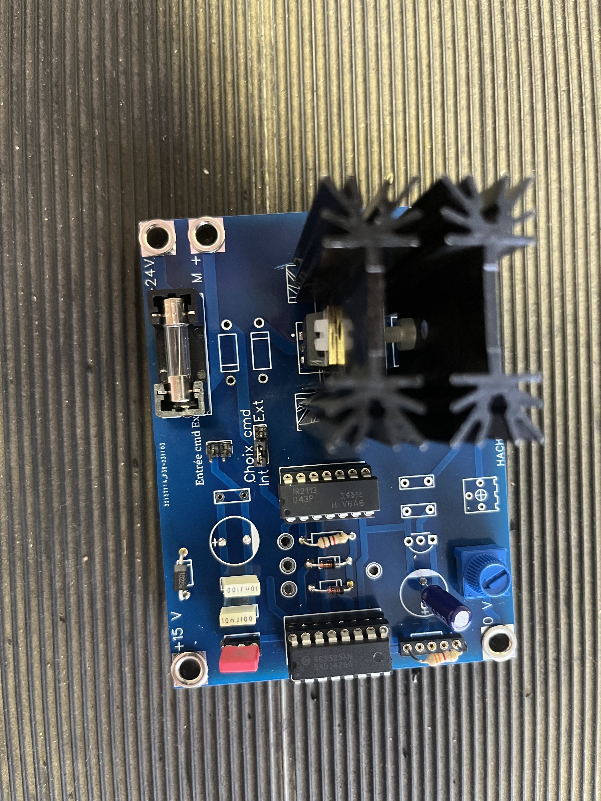

Ce projet a été réalisé en première année de BUT GEII, en groupe de trois. L’objectif était de concevoir une carte électronique permettant la variation de la vitesse d’un moteur à courant continu. Nous avons d'abord étudié le moteur, puis simulé la variation de vitesse avant de réaliser la carte avec sa partie commande et sa partie puissance. Ce projet nous a permis de mettre en pratique plusieurs compétences acquises en cours, comme la lecture de schémas, la simulation et la soudure de composants.
Contexte et Démarche Pédagogique
Pour ce troisième projet de l’année, nous avons été amenés à concevoir un système de motorisation pour un vélo à assistance électrique. Ce projet s’inscrivait dans une démarche à la fois écologique et technique, combinant des compétences fondamentales de notre formation, notamment en électronique de puissance, en systèmes embarqués et en instrumentation.
L’objectif était de mieux comprendre le fonctionnement d’un moteur à courant continu et d’étudier le pilotage de la vitesse via un montage à hacheur série. L’approche pédagogique se faisait sous forme de questions guidées, nous poussant à réfléchir par nous-mêmes à chaque étape, tout en étant encadrés.
Mise en Œuvre et Bilan
Nous avons commencé par souder plusieurs composants sur une carte (résistances, condensateurs, diodes), puis nous avons analysé les différents blocs du système : la partie puissance et la partie commande. Par la suite, nous avons appris à faire varier le rapport cyclique d’un signal PWM, ce qui permet de moduler la tension moyenne appliquée au moteur et donc sa vitesse.
Ce projet m’a permis de mieux appréhender le fonctionnement global d’un moteur électrique et de me familiariser avec les bases du pilotage par hacheur, tout en continuant à développer mes compétences pratiques en soudure, en lecture de schémas électroniques et en analyse de circuits.
Compétences Développées sur ce Projet
| Compétence | Détail de la compétence | Niveau d’acquisition |
|---|---|---|
| Soudure de composants | Soudure de composants traversants (résistances, diodes, etc.) sur une carte électronique prêtée. | |
| Connaissance des composants | Utilisation et soudure de composants spécifiques comme le contrôleur PWM SG3525 et un hacheur de puissance. | |
| Réalisation de cartes électroniques | Assemblage et tests fonctionnels des cartes de commande (logique PWM) et de puissance (hacheur). | |
| Résolution de problèmes techniques | Réalisation de tests de fonctionnement sur le système motorisé pour valider chaque étape du montage. | |
| Rédaction de documents techniques | Utilisation d’outils collaboratifs (Google Docs, Slides) pour le suivi et la présentation du compte-rendu. |
Détails du Projet (Vidéo & Image)
Découvrez le système en action et le montage de la carte électronique :
